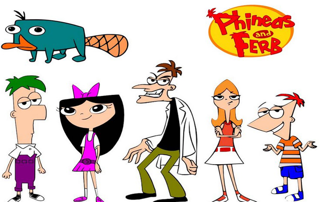
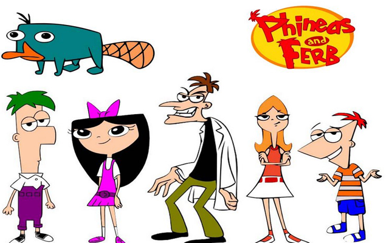

Tema 2 - Grundlæggende animation
Aktivitetsdiagram
I tema 4 skulle igennem idé/konceptfase før, vi programmerede vores eget klik spil.
Vi blev bla. introduceret til aktivitetsdiagrammet, som er et adfærdsdiagram, der er en del af UML standarden.
Jeg bruger den til at beskrive mine handlinger og beslutninger i mit spil.
Cirkler repræsenterer start og slut.
Jeg viser mine handlinger i elipser. At der flyver kyllinger og sensorer forbi. Hvad der sker når man klikker på dem,
og at der er point for klik på kylling og mistet liv for sensor.
Diamanten repræsentere beslutningen om, at hvis der flere liv forsættes spillet, hvis ikke så "game over".
Efter 25 sekunder besluttes der, at hvis man har 10 point eller mere er det "level complete".

Skitser af figurdesign og startskærm
I denne opgave skulle vi tegne skitser til vores karaktere og skærme, inspireret af vores stiludgangspunkt.
Vi blev undervist i undersøgelse af karakter design. Herunder solid drawing, former, asymmetri og appeal.
Jeg valgte at tage principperne om former ind i mit karakterdesign. Min kyllingeskitse fik runde og bløde former,
da det symboliserer den "uskyldige" og "gode" karakter.
Jeg gav min ræv den trekantede spidse form, der symboliserer det "onde" og "farlige".
Mine første skitser af kyllingen var anderledes end resultatet, da jeg ikke fik inddraget mit stiludgangpunkt "Phineas og Ferb".
Så jeg lod mig inspirere af Ferb til min endelige kylling, specielt hans øjne og hans firkantede lange form.
I titlen i "Phineas og Ferb" er deres "hoved appeal" inddraget i bokstaverne.
Det synes jeg var en fed deltalje, så jeg tegnede "F" til et rævens hoved og kyllingen som prikken over "i'et".
Det lykkedes heldigvis at inddrage denne deltalje i mit endelige design.
 

Animations-spil: Fox attacks Chicken Farm
I temaopgaven skulle vi programmere spillet med JavaScript, og designe skærme, karakterer og UI elementer i Adobe Illustrator.
Grafikken blev eksporteret som svg formater, da de kan skaleres uden at forringe kvaliteten.
Indenfor baggrundsdesign, lærte vi om kompositions principper, atmosfærisk perspektiv, rule of thirds, focal point, kontraster.
I mit design af startskærmen, har jeg brugt focal point i min forgrund.
Det er titlen og kyllingerne. Det er mest dominerende i designet, fordi
farverne er lysere og står skarpere end de andre farver i mellem/baggrunden.
Udformningen af titlen er deltajeret,
da "Fox" er en skrifttype med skarpe kanter der harmonere med ræven, og "Chicken Farm" har de bløde former ligesom kyllingen's form. Den orange farve står i kontrast med himlens blå.
Jeg blev inspireret af atmosfærisk perspektiv princippet, så bakkerne bagerst i baggrunden har en mørkere grøn tone
end de forreste. Det skaber dybde i billedet, og gør det realistisk ift. øjets blikfang.
Jeg endte med dette resultat fremfor min skitse idé, da kyllingerne skulle fremhæves og være i fokus - da de er dem man skal fange i spillet.
Vi blev introduceret til JavaScript, så vi kunne programmere vores spil.
Et eksempel på JavaScript i mit spil er, at jeg i min funktion startGame(), sætter flyve animationer på min kylling container.
Det gør jeg ved at tilføje en class med classList.add("flyv"), og .flyv er en animation lavet i CSS,
som animerer kylling containeren til at flyve henover skærmen.